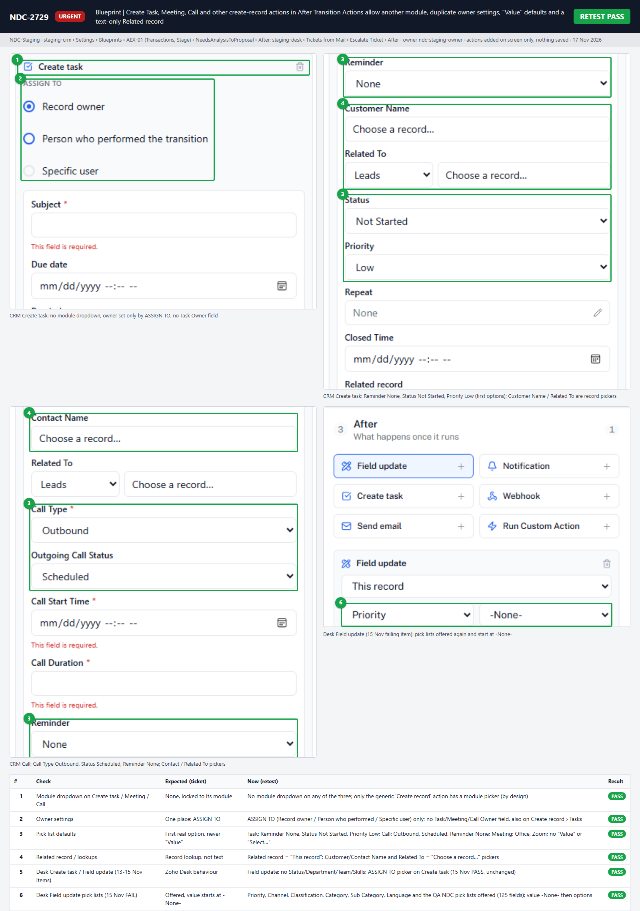
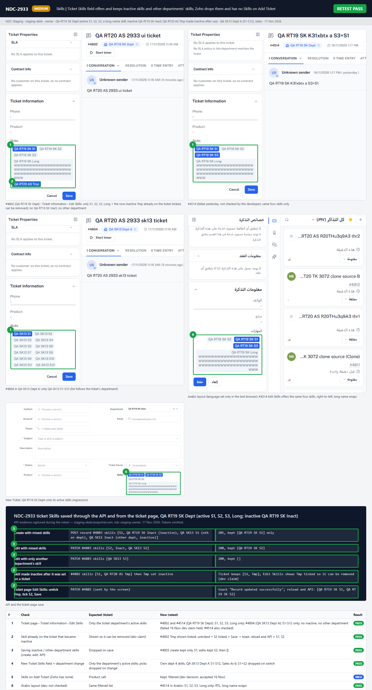
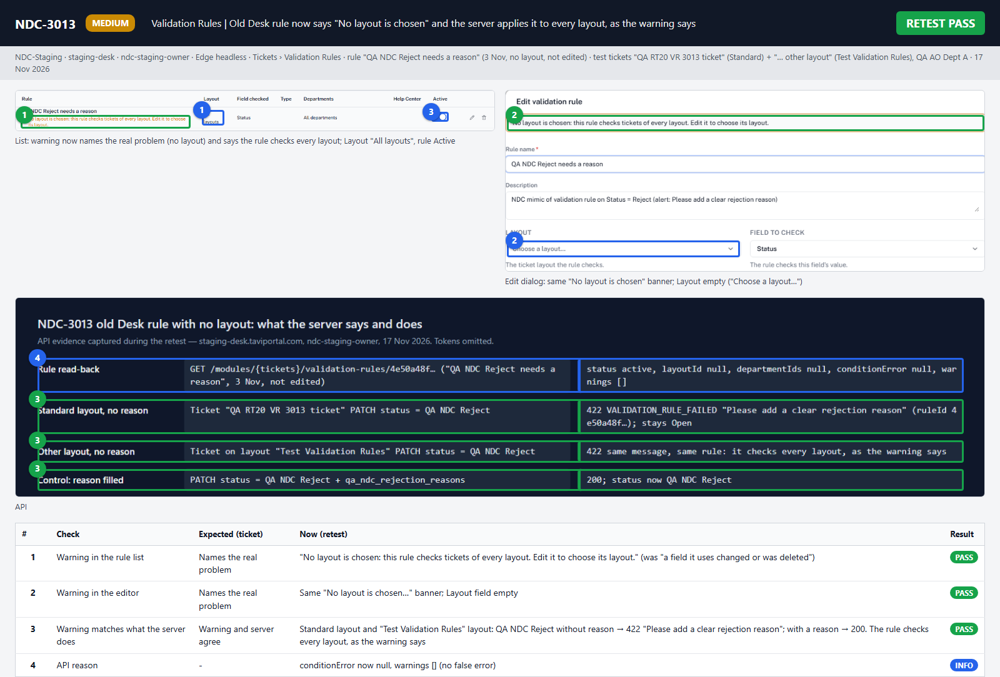
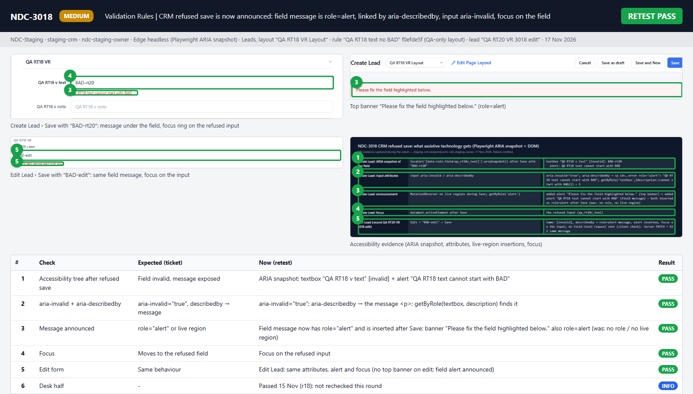
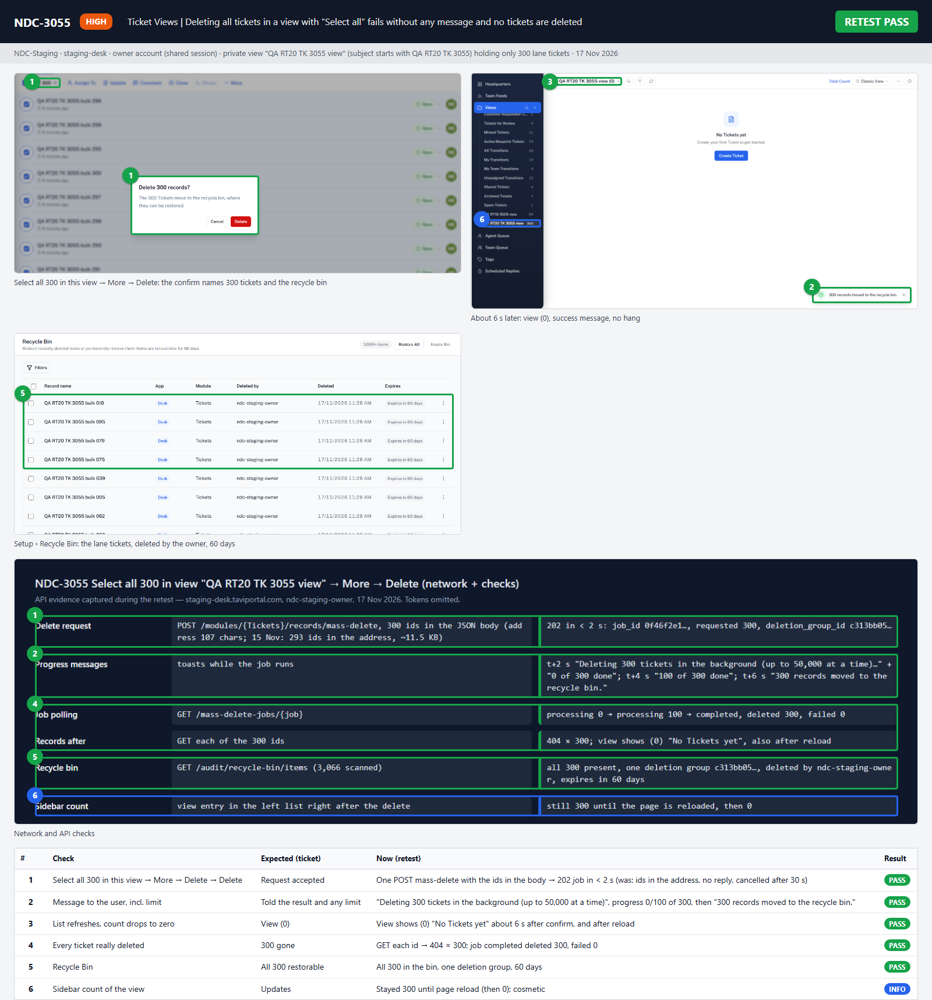
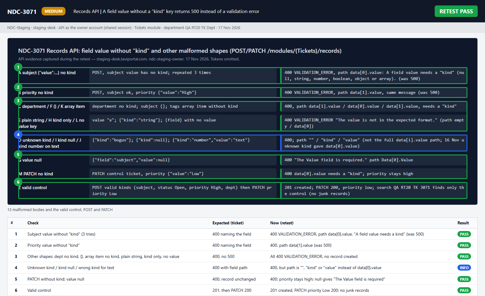
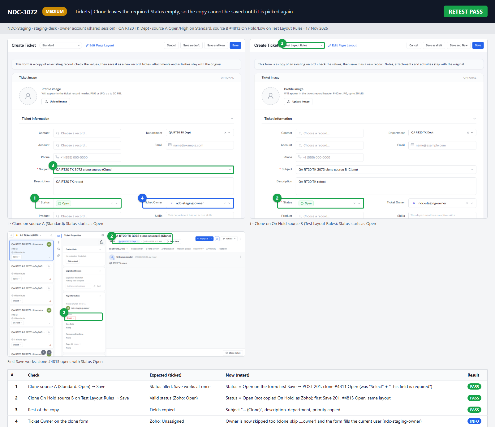
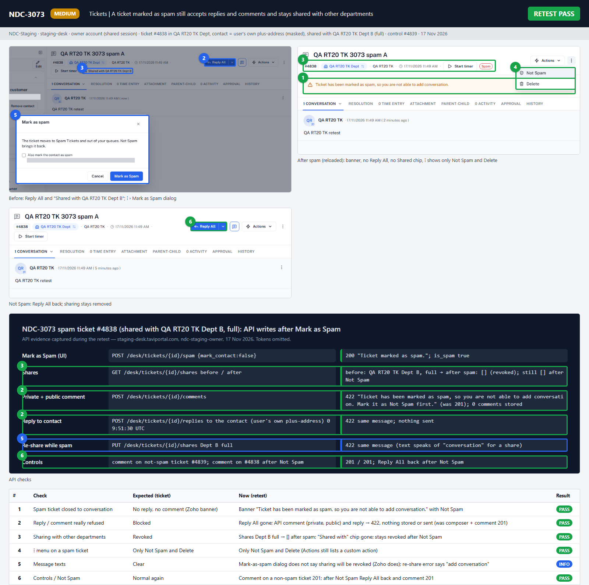

Retest round 20 — review
Mahmoud Mohamed's Ready For Test tickets · NDC · 17 Nov 2026 · NDC-Staging (staging-desk / staging-crm) · 5 parallel lanes · Edge + API
17tickets in Ready For Test, all tested
8PASS → moved to Done (posted, read back)
5PARTIAL — held for your OK
2need your decision
3blocked by the staging outage
0posted as Bug yet
⚠ Staging outage found today
Since early 17 Nov staging stopped three background jobs at once: incoming email (two user emails never arrived), ticket history (no status/blueprint events, no closed or resolution time, desk status stays Open after a blueprint run — verified on #4807, #4811, #4829 vs yesterday's #4699) and round robin assignment (nothing assigned since 16 Nov 12:15 UTC). It looks like one stopped service. Not filed yet. It blocks NDC-2275, NDC-3000 and NDC-3068.1 · Needs your decision
NDC-3064 DECISION Tickets | A ticket has no Edit button for all its properties, and no way to add, change or remove its contact
The new Edit form saves contact, subject, description and priority together; Add / Change / Remove contact work and survive reload. Status, Ticket Owner and Department are not in the Edit form (still inline / Move).
Options: (a) Done — those 3 stay inline · (b) Bug for the 3 fields
Evidence

NDC-3065 DECISION Blueprint | An agent with read-only access to a ticket can still run a transition they own and move the ticket
Read-only through role is fully fixed (designer, owners list, Assign owners, API refusals, "Read only" marker). The ticket's exact case still happens: a normal agent who can only read another person's ticket is offered the transition and Run moves the ticket (developer decision B-14 keeps this). Right after, the agent loses access to the ticket ("not available").
Options: (a) Bug — keep the ticket's expectation · (b) accept B-14 and file only the access-loss problem
Evidence

Also waiting on you
- Raise the staging outage with the developers, or let me file it (High).
- OK to move the 4 held partials below to Bug with their comments and images.
- Which new findings (section 5) to draft.
- Cleanup of rounds 18–20 test data, including switching off 16 old "QA RT18 SR" scoring rules that still add points to every lead.
2 · Blocked by the staging outage (3)
NDC-2275 BLOCKED Assignment Rules: Direct Assignment and Round Robin (requirements)
Round robin assigned nothing 09:38–10:15 UTC — 13 tickets stayed Unassigned, even with plain control rules (no threshold, online owner as the pool). Held: the phantom-count fix (Test User 1 counts 4, Dev Team 2 counts 1 = real), import to importer (GEN-13), English help text. Lane verdict FAIL; my call: blocked by the staging outage.
Evidence

NDC-3000 BLOCKED Email | acknowledgement emails + rating link
Passed: new-ticket acknowledgement for #4745 (one copy, user inbox, 16 Nov) and the rating link in the closed email. Blocked: reply acknowledgement — the user's reply to #4745 (09:58 Cairo, correct address) and a new "inbound check" email never reached staging; address active/verified, quarantine empty.
Evidence

NDC-3068 BLOCKED Ticket History | Closed Time / Resolution Time
The reported entry on #4177 now reads correctly ("Closed Time 16/11/2026 11:48 AM", "Resolution Time Less than a minute"). Tickets closed today get neither line — caused by the history outage, so the fix can't be judged on new tickets.
Evidence

Plan: when staging recovers, retest these three (about 30 min); for 3000 the user replies to #4745 once more if the earlier reply never shows.
3 · Partial — held, proposed → Bug (4)
NDC-3067 PARTIAL Audit Log | Changes made in the web app show the server's internal address ::ffff:172.19.0.19 instead of the user's IP
Most web-app changes now show the user's public IP (499 rows). Still failing: agent/permission changes show 172.19.0.19, Recycle Bin restore 172.19.0.36, blueprint runs and mass deletes show no IP.
Still failing (as it will be posted) + evidence
Agent / permission changes (IAM) made in the browser : expected User's own IP; actual 3 of 3 today show IP 172.19.0.19 (e.g. CES2 permission GRANT desk:ticket:share)
Blueprint transition runs and mass delete by a user : expected User's own IP; actual No IP line at all (21 user rows without IP; API also has no actor label on the transition rows)
NDC-3027 PARTIAL Audit Log | Entries show the internal field name EngineDeletedAt and name a deleted ticket by the contact's email
Delete/restore entries now name the ticket by subject; no EngineDeletedAt, no email; round 18's department item fixed. Still failing: other entries use internal names ("IsActive", "Version").
Still failing (as it will be posted) + evidence
Other field names : expected Readable; actual "QA RT20 BP Dept B's IsActive from yes to no"; assignment rules "IsActive", "Version from 1 to 2" — internal names
NDC-1988 PARTIAL Layout rules, validation rules, nested picklists
3 of 6 items built (layout rules, cross-field validation rules, nested picklists 7 levels). Missing: picklist values per layout, Help Center access per field, field encryption with ePHI label — none of the three is on the NDC-2996 gap list.
Still failing (as it will be posted) + evidence
Different picklist values per layout : expected Each layout can use a subset; actual Missing: no UI for it (options are module-wide); a subset stored on the layout by API is ignored by the form and by the server (urgent saved)
Help Center access per field (editable / read-only / hidden) : expected Per-field customer access; actual Missing: field permissions are profile Read/Edit + Read-only only; HC forms only have hidden/required/default per form field. Layout rules with "Apply to Help Center" work (12 Nov G17)
Field encryption with ePHI label : expected Encrypt sensitive custom fields; actual Missing: field API refuses "encrypted" (DATATYPE_OPTION_UNKNOWN); no encryption or ePHI option in the app
NDC-1483 PARTIAL Scoring Rule
Works end to end (points, operators, rescoring existing leads, on/off/delete, list/view/workflow/report use, permissions, audit). Defect: reports keep old scores after a background rescore. 7 Zoho gaps already on NDC-2934.
Still failing (as it will be posted) + evidence
Report after a background rescore : expected Report shows the current score; actual Report keeps the old score of leads changed by a background run (A 37 vs 33, N -4 vs 0) 20+ min later; correct after the lead is saved
4 · Passed → Done (8, posted)
| Ticket | Title | What proved it | Evidence |
|---|---|---|---|
| NDC-2729 PASS | Blueprint | Create Task, Meeting, Call and other create-record actions in After Transition Actions allow another module, duplicate owner settings, "Value" defaults and a text-only Related record | Module dropdown on Create task / Meeting / Call → No module dropdown on any of the three; only the generic 'Create recor…Module dropdown on Create task / Meeting / Call → No module dropdown on any of the three; only the generic 'Create record' action has a module picker (by design) [PASS] Owner settings → ASSIGN TO (Record owner / Person who performed / Specific user) only; no Task/Meeting/Call Owner field, also on Create record › Tasks [PASS] Pick list defaults → Task: Reminder None, Status Not Started, Priority Low; Call: Outbound, Scheduled, Reminder None; Meeting: Office, Zoom; no "Value" or "Select…" [PASS] Related record / lookups → Related record = "This record"; Customer/Contact Name and Related To = "Choose a record…" pickers [PASS] Desk Create task / Field update (13-15 Nov items) → Field update: no Status/Department/Team/Skills; ASSIGN TO picker on Create task (15 Nov PASS, unchanged) [PASS] Desk Field update pick lists (15 Nov FAIL) → Priority, Channel, Classification, Category, Sub Category, Language and the QA NDC pick lists offered (125 fields); value -None- then options [PASS] |  |
| NDC-2933 PASS | Skills | Ticket Skills field offers and keeps inactive skills and other departments' skills; Zoho drops them and has no Skills on Add Ticket | Ticket page › Ticket Information › Edit Skills → #4802 and #4514 (QA RT19 SK Dept): S1, S2, S3, Long only; #4804 (QA SK1…Ticket page › Ticket Information › Edit Skills → #4802 and #4514 (QA RT19 SK Dept): S1, S2, S3, Long only; #4804 (QA SK13 Dept A): S1-S12 only; no inactive, no other department (failed 16 Nov; dev claim held, #4514 also checked) [PASS] Skill already on the ticket that became inactive → #4802 Tmp shown ticked; unticked + S2 ticked + Save → toast, reload and API = S1, S2 [PASS] Saving inactive / other-department skills (create, edit, API) → #4803 create kept only S1; edits kept S2, then [] [PASS] New Ticket Skills field + department change → Own dept 4 skills, QA SK13 Dept A S1-S12, Sales its 6; S1+S2 dropped on switch [PASS] Skills on Add Ticket (Zoho has none) → Kept, filtered (dev decision, accepted 16 Nov) [INFO] Arabic layout (dev: not checked) → #4514 in Arabic: S1, S2, S3, Long only; RTL, long name wraps [PASS] |  |
| NDC-3013 PASS | Validation Rules | Old Desk rule says it "can't be applied" for the wrong reason, and is still applied | Warning in the rule list → "No layout is chosen: this rule checks tickets of every layout. Edit it to choose its layout.…Warning in the rule list → "No layout is chosen: this rule checks tickets of every layout. Edit it to choose its layout." (was "a field it uses changed or was deleted") [PASS] Warning in the editor → Same "No layout is chosen…" banner; Layout field empty [PASS] Warning matches what the server does → Standard layout and "Test Validation Rules" layout: QA NDC Reject without reason → 422 "Please add a clear rejection reason"; with a reason → 200. The rule checks every layout, as the warning says [PASS] API reason → conditionError now null, warnings [] (no false error) [INFO] |  |
| NDC-3018 PASS | Validation Rules | Screen readers are not told why a save was refused | Accessibility tree after refused save → ARIA snapshot: textbox "QA RT18 v text" [invalid] + alert "QA RT18 text cannot s…Accessibility tree after refused save → ARIA snapshot: textbox "QA RT18 v text" [invalid] + alert "QA RT18 text cannot start with BAD" [PASS] aria-invalid + aria-describedby → aria-invalid="true"; aria-describedby → the message <p>; getByRole(textbox, description) finds it [PASS] Message announced → Field message now has role="alert" and is inserted after Save; banner "Please fix the field highlighted below." also role=alert (was: no role / no live region) [PASS] Focus → Focus on the refused input [PASS] Edit form → Edit Lead: same attributes, alert and focus (no top banner on edit; field alert announced) [PASS] Desk half → Passed 15 Nov (r18); not rechecked this round [INFO] |  |
| NDC-3055 PASS | Ticket Views | Deleting all tickets in a view with "Select all" fails without any message and no tickets are deleted | Select all 300 in this view → More → Delete → Delete → One POST mass-delete with the ids in the body → 202 job in < 2 s …Select all 300 in this view → More → Delete → Delete → One POST mass-delete with the ids in the body → 202 job in < 2 s (was: ids in the address, no reply, cancelled after 30 s) [PASS] Message to the user, incl. limit → "Deleting 300 tickets in the background (up to 50,000 at a time)", progress 0/100 of 300, then "300 records moved to the recycle bin." [PASS] List refreshes, count drops to zero → View shows (0) "No Tickets yet" about 6 s after confirm, and after reload [PASS] Every ticket really deleted → GET each id → 404 × 300; job completed deleted 300, failed 0 [PASS] Recycle Bin → All 300 in the bin, one deletion group, 60 days [PASS] Sidebar count of the view → Stayed 300 until page reload (then 0); cosmetic [INFO] |  |
| NDC-3071 PASS | Records API | A field value without a "kind" key returns 500 instead of a validation error | Subject value without "kind" (3 tries) → 400 VALIDATION_ERROR, path data[0].value, "A field value needs a kind" (was 500…Subject value without "kind" (3 tries) → 400 VALIDATION_ERROR, path data[0].value, "A field value needs a kind" (was 500) [PASS] Priority value without "kind" → 400, path data[1].value (was 500) [PASS] Other shapes: dept no kind, {}, array item no kind, plain string, kind only, no value → All 400 VALIDATION_ERROR, no record created [PASS] Unknown kind / kind null / wrong kind for text → 400, but path is "", "kind" or "value" instead of data[0].value [INFO] PATCH without kind; value null → 400; priority stays high; null gives "The Value field is required" [PASS] Valid control → 201 created, PATCH priority Low 200; no junk records [PASS] |  |
| NDC-3072 PASS | Tickets | Clone leaves the required Status empty, so the copy cannot be saved until it is picked again | Clone source A (Standard, Open) → Save → Status = Open on the form; first Save → POST 201, clone #4811 Open (was "Select…Clone source A (Standard, Open) → Save → Status = Open on the form; first Save → POST 201, clone #4811 Open (was "Select" + "This field is required") [PASS] Clone On Hold source B on Test Layout Rules → Save → Status = Open (not copied On Hold, as Zoho); first Save 201, #4813 Open, same layout [PASS] Rest of the copy → Subject "… (Clone)", description, department, priority copied [PASS] Ticket Owner on the clone form → Owner is now skipped too (clone_skip …,owner) and the form fills the current user (ndc-staging-owner) [INFO] |  |
| NDC-3073 PASS | Tickets | A ticket marked as spam still accepts replies and comments and stays shared with other departments | Spam ticket closed to conversation → Banner "Ticket has been marked as spam, so you are not able to add conversation." w…Spam ticket closed to conversation → Banner "Ticket has been marked as spam, so you are not able to add conversation." with Not Spam [PASS] Reply / comment really refused → Reply All gone; API comment (private, public) and reply → 422, nothing stored or sent (was composer + comment 201) [PASS] Sharing with other departments → Shares Dept B full → [] after spam; "Shared with" chip gone; stays revoked after Not Spam [PASS] ⋮ menu on a spam ticket → Only Not Spam and Delete (Actions still lists a custom action) [PASS] Message texts → Mark-as-spam dialog does not say sharing will be revoked (Zoho does); re-share error says "add conversation" [INFO] Controls / Not Spam → Comment on a non-spam ticket 201; after Not Spam Reply All back and comment 201 [PASS] |  |
5 · New findings — not filed
| Sev | Finding | Found in | Note |
|---|---|---|---|
| High | Staging outage since ~17 Nov morning: incoming email, ticket history (status/blueprint events, closed time, desk status after blueprint runs) and round robin assignment all stopped | all lanes; verified by the lead (#4807/#4811/#4829 vs #4699) | Ask devs / file |
| Medium | Agent loses access to another person's ticket right after running its transition | NDC-3065 | depends on the 3065 decision |
| Medium/Low | CRM reports keep old Score after a background rescore (list + API correct) | NDC-1483 | |
| Low | Disabling a department with a transfer target moves its tickets to the default department instead | NDC-3027 lane | needs confirming |
| Low | Mark as Spam dialog doesn't warn that sharing will be revoked; re-share refusal uses the "add conversation" wording; Actions still offers a custom action on spam | NDC-3073 | Zoho warns |
| Low | Sidebar view count stays at 300 after bulk delete until reload | NDC-3055 | cosmetic |
| Low | Records API: some malformed kinds report error path "", "kind" or "value" instead of data[i].value | NDC-3071 | |
| INFO | Clone fills current user as Ticket Owner (Zoho: Unassigned); Run scoring rules has no confirmation (12,041 leads); score workflow does not fire on background rescore | NDC-3072 / 1483 | parity / decision |
6 · How the round ran
- 5 parallel lanes on one owner session (renewed by one keeper process; owner re-signed once at 08:2x UTC with your OK after the overnight expiry). Lanes: Assignment+Skills, Blueprint/History/Audit, Tickets, Validation+Layout rules, CRM Scoring.
- Extra sign-ins: one QA agent (Customer Experience Specialists 2) for NDC-3065, one CRM user (Mahmoud Samy) for NDC-1483 permissions. Zoho CRM opened read-only; no Zoho data created.
- All data prefixed "QA RT20", 223 ledger lines; rules/blueprints/workflows left inactive; settings and agents restored. Cleanup pending your OK.
- Privacy: one lane's tool output briefly showed real contact addresses from the contact picker; never written to a file or image, screenshot deleted, all evidence masked.